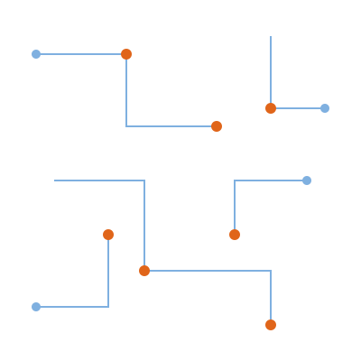

An exclusive, internationally-taught programme on the engineering that turns trained models into fast, reliable, affordable production services — hosted in India for the first time.
The hard part of modern machine learning is increasingly not training a model, but serving it — quickly, cheaply, and at scale, to real users.
The International Workshop on Machine Learning Inference Engineering (MLIE 2026) is a six-day, residential programme that introduces this discipline end to end. Previously held only abroad, it comes to India for the first time, hosted by the Centre for Machine Intelligence and Data Science (C-MInDS) and the Department of Computer Science & Engineering at IIT Bombay, under the Institute's Continuing Education Programme.
It is deliberately exclusive: a small cohort, three lead instructors drawn from Tokyo, the United States and IIT Bombay, and a structure that mixes lectures with supervised labs on the C-MInDS GPU cluster. By the end, every participant will have profiled, optimised and deployed a model of their own.
| Edition | 1st India edition |
|---|---|
| Dates | 21–26 June 2026 (Sun–Fri) |
| Duration | 6 days · in-person, residential |
| Venue | VMCC, IIT Bombay, Powai |
| Faculty | Tokyo · USA · IIT Bombay |
| Entry | Free via quiz, or ₹20,000 direct |
| Seats | Exclusive · strictly limited |
| Certificate | CEP, IIT Bombay |
Entry is in two phases — a national qualifier, then the in-person workshop itself.
The free, nationally-open online quiz on ML and systems fundamentals ran 15–29 May 2026 and has now concluded. Top performers have been offered fully-funded (free) seats. It was the merit route into the cohort.
The six-day, in-person workshop at IIT Bombay, 21–26 June 2026, with the international faculty. Beyond the funded seats, a limited number of direct seats are available at ₹20,000.
By the close of the workshop, participants will have the vocabulary and the hands-on muscle memory to take a model to production.
Read a roofline plot, distinguish compute-bound from memory-bound workloads, and decide where optimisation effort will actually pay off.
Apply INT8/INT4 quantization, pruning and distillation, and measure the real trade-off between size, speed and accuracy.
Stand up a batched, KV-cached inference service with vLLM / Triton and expose it behind an autoscaling endpoint.
Use Nsight and PyTorch profiler to find bottlenecks and apply operator fusion and FlashAttention-style kernels.
Serve a large language model with paged attention and parallelism, and reason about cost per million tokens.
Add monitoring, canary rollouts and drift detection so the service survives contact with real traffic.

The format is intentionally intense and practical, across all six days:
Teaching assistants maintain a low ratio in labs, so help is always close at hand.
Open to students, scholars, research staff and faculty from all IITs, IISc, IIITs, NITs and recognised partner institutions, plus a limited number of international participants and early-career professionals. A valid institute / photo ID is required at check-in.
A short primer and setup guide is e-mailed to selected participants two weeks before the workshop.
The Centre for Machine Intelligence and Data Science is IIT Bombay's interdisciplinary hub for AI research, teaching and the institute's shared GPU infrastructure.
The Department of Computer Science & Engineering, one of India's leading CS departments, contributes faculty across machine learning and systems.
The Continuing Education Programme is the institute's vehicle for short courses and professional upskilling, and issues the certificate of completion.
Review the six-day schedule, meet the international faculty, and secure your place through the quiz or a direct seat.